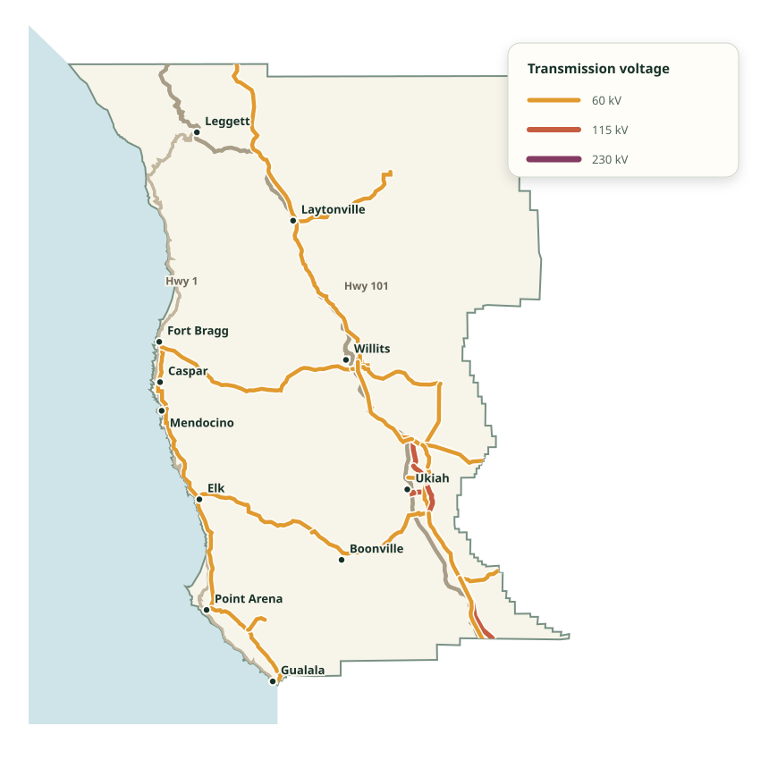
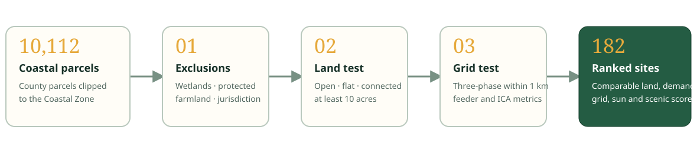
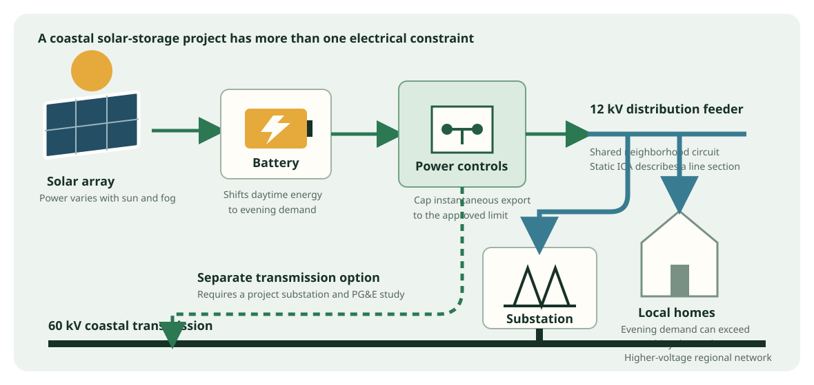

Transmission costs
Energy transmission loses energy due to electrical resistance. Around 10% of electrical energy we use here becomes heat energy while crossing a transmission line.
A solar developer approached Caspar Water Company interested in a lease on its field near Highway 1. We learned that interconnection capacity is a major obstacle for new solar developments. What does that tell us about site suitability? We learned that Mendocino Coastal ordinances do not permit grid-scale solar in residential zones*.
*Mendocino Co. Ordinance 3857 states otherwise.
At the edge of the grid
The electric grid carries energy over transmission lines that separate major population centers. Our capacity to transmit energy to and from the coast is limited by the size of these lines. To bring a new solar utility online requires an interconnection agreement with PG&E. When grid is capacity constrained, transmission across that section is not permissible without upgrading the grid.

Energy transmission loses energy due to electrical resistance. Around 10% of electrical energy we use here becomes heat energy while crossing a transmission line.
Coastal Mendocino is served by three transmission lines of aging infrastructure, designed before electric vehicles, residential heat pumps, or grid-scale solar.
PG&E's power coastal power stations were not designed to feed power from the coast back into the grid. Mendocino coast can only use what we generate on the coast.
The story
“We know a couple of possible sites because we live nearby. How do we expand that knowledge across the whole coast?”
A useful coastal project needs more than a sunny parcel. It needs a large, connected area of buildable land; access to three-phase distribution; a community that can use the energy; storage for foggy weather and evening demand; and a realistic path through environmental, visual, and land-use constraints.
The model downloads public GIS and PG&E planning data, applies the same tests to every parcel in the Mendocino County Coastal Zone, and publishes the assumptions and intermediate measures. Local knowledge still matters: the ranking is a way to focus investigation, not replace it.
How the analysis works
Hard screens establish whether a site is a plausible candidate. A weighted score then compares candidates that remain.

Clip parcels to the Coastal Zone, remove wetlands and selected protected or important farmland, and exclude Fort Bragg and County Open Space zoning.
Find the largest connected area with open land cover and slope no greater than 10 degrees. A candidate needs at least 10 contiguous acres.
Require a three-phase PG&E section within one kilometer, then report feeder demand, static hosting capacity, and nearby transmission.
Compare local residential and evening demand, development intensity, solar resource, industrial reuse, and modeled visibility from Highway 1.
The scoring function
Each component is normalized from 0 to 1 and multiplied by its published weight. The weights sum to 100%.
How the coastal grid works
The diagram shows the two interconnection paths considered by the study and why storage matters on a coast where demand peaks after sunset.

Neighborhood feeders deliver power from a substation to homes. A solar project can connect locally, but voltage, conductors, protection, reverse flow, and shared upstream equipment can limit export.
PG&E’s Integration Capacity Analysis estimates additional instantaneous generation a line section may accept without identified upgrades. It is a planning screen, not permission to interconnect.
A 1 MW array might generate roughly 5 MWh on a good day. A battery can absorb daytime production, smooth cloud variation, serve evening load, and keep export within an approved limit.
A nearby transmission line may offer a separate path, but proximity does not prove capacity. It can require a project substation, switching, protection, easements, and a formal system-impact study.
Public data foundation
Mendocino County parcels and zoning, California Coastal Zone, Fort Bragg boundary, protected lands, important farmland, wetlands, and CAL FIRE hazard zones.
USGS 3DEP elevation and NLCD 2021 land cover measure slope, connected open land, and conservative vegetation screening in the Highway 1 viewshed.
PG&E ICA line sections, feeder characteristics and load profiles, plus California Energy Commission transmission geometry.
NASA POWER solar climatology and official Caltrans Highway 1 geometry support resource and scenic-exposure screening.
View retrieval provenance · Download generated results · Read the source code
Continue the investigation